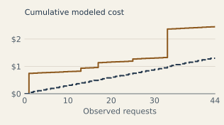

cc · Context Compiler
Better AI answers, built on knowledge that accumulates.
Context Compiler preserves the analytical definitions a team has validated and compiles source evidence for each new question. We measure the result as Reasoning Yield — how many correct, fully supported answers a model produces per million tokens.
Fully supported answers
- Context Compiler
- 95.5%42 of 44 requests
- Hybrid retrieval
- 54.5%24 of 44 requests
44 recurring bank research requests per system. Both used the same model and underlying filings.
Measured direct-API results
18 more fully supported answers in 44 requests.
- 8.4×Reasoning YieldCC delivered 75% more fully supported answers while consuming fewer model tokens.
- 73%Lower inference expense$0.33 for CC and $1.21 for retrieval across the original 44 requests.
- 38.7%Lower warm inference expenseCC scored 6/6 and retrieval scored 4/6 on immediate repeats. Both systems hit the prompt cache.
Experimental results specific to the tested investment-research workloads. Inference expense excludes semantic preparation and maintenance.
Reasoning Yield Frontier

At a 2,400-token context allowance, CC produced 42 fully supported answers in 48 attempts. Retrieval reached 21 at its largest tested allowance, 9,600 tokens, and was still improving.
Both systems used the same filings, questions and answering model. Retrieval combined keyword and vector search with reranking. CC supplied evidence selected using the bank-specific definitions.
Each point represents a tested setting. The three largest CC allowances supplied identical context and their points overlap.
| Measure | CC | Hybrid retrieval |
|---|---|---|
| Correct, fully supported answers | 42 | 24 |
| Unsupported or incorrect outcomes | 2 | 20 |
| Total model tokens consumed | 109,190 | 524,712 |
| Fully supported answers per million tokens | 384.7 | 45.7 |
Reasoning Yield = (correct, fully supported answers ÷ total model tokens consumed) × 1,000,000. Tokens spent on failed attempts count too.
Quality definition and measurement method
A fully supported answer had to give every required figure and claim correctly and cite evidence for the right bank, measure and period. The frozen scorer accepted source quotations and compiler references. On the frontier’s unanswerable question, a correct abstention earned credit.
Claude Sonnet 5.5 answered without tools, with the same instructions and a 1,500-token output limit. The frontier tested four context allowances on Regions Financial and KeyCorp. The separate lifecycle followed 44 requests per system, including repeated questions, changed filings, a second issuer and historical replay. The team developed the answer key and pack with the filings in view.
The lifecycle’s frozen scores were 42/44 for CC and 24/44 for retrieval. Independent review identified valid citations on two more retrieval answers, bringing its adjudicated count to 26/44.
Provider usage was priced at the study’s rates per million tokens of $2 for ordinary input, $2.50 for cache writes, $0.10 for cache reads and $10 for output. The original lifecycle had no cache hits in either arm. Inference totaled $0.326676 for CC and $1.207584 for retrieval, including failed answers.
The warm comparison repeated six questions from one issuer immediately after seeding each system’s five-minute prompt cache. The warm calls cost $0.0215164 for six supported CC answers and $0.0350742 for four supported retrieval answers. Both systems generated fresh answers. That leaves about $0.00226 in inference savings per warm request.
Economic Crossover
An unsupported figure in a research note can send an analyst back to the filing. CC left two answers to investigate where retrieval left 20. The study measured no analyst correction time or downstream decision costs, so the curves assign those potential benefits no dollar value.
Across the 44 observed requests, CC saved $0.88 in inference. Its allocated semantic preparation alone cost an estimated $2.12. CC did not recover preparation costs at any point in the lifecycle.
Observed 44-request lifecycle

Including allocated preparation and machine time, CC ended at $2.45 and retrieval at $1.32.
Mostly new questions

Projected crossover at 3,085 requests. 80% new questions using existing definitions, 10% warm repeats and 10% filing changes.
Mostly repeat questions

Projected crossover at 11,266 requests. 80% warm repeats, 15% new questions using existing definitions and 5% filing changes.
Mostly filing changes

No projected crossover. At 70% filing changes, 20% new questions using existing definitions and 10% warm repeats, each request widens the gap.
Cost assumptions and underlying data
For the original 44 requests, the model allocated recorded issuer mapping across 24 exported documents and assigned 28 of 46 historical task bindings to this workload. It repriced that work at the answering model’s rates and valued local compute at $1 per machine-hour for both systems. Human review, original pack development and customer integration remain unpriced.
The projections use the measured average inference cost for each task category. Cumulative retrieval cost is request count times its weighted cost per request. CC adds the $50 setup and a share of update cost for changed filings. The crossover is the first whole request at which CC’s modeled cumulative cost falls below retrieval’s. Cache expiry, answer reuse and different maintenance costs can move or eliminate it.
From sources to a model answer

- SourcesIdentify the bank, reporting period, filing version and evidence available as of the research date.
- Semantic PackRecord what each measure means, which sources govern it and which accounting checks apply.
- CompilationSelect the evidence the question needs. Apply those rules and carry source references into the context.
- ModelAnswer from the compiled context and cite the evidence behind each figure.
A filing may give both reported net interest income and a taxable-equivalent figure that adjusts for tax-exempt income. An analyst comparing margins across quarters needs to know which basis each figure uses. Once the analyst validates that distinction, the pack can carry it into the next comparison. The firm keeps the definition and source mappings even if it changes the answering model.
In the lifecycle, KeyCorp reused definitions and accounting checks already established for Regions. It still needed 20 new declarations of its own. That reuse was observed. Whether a growing pack improves answer quality on future tasks remains an open question.
Python interface
pack = cc.load_pack(pack_path)
snapshot = cc.snapshot(
sources,
inventory
)
ir = cc.derive(
snapshot,
read_bytes,
pack,
extraction_artifacts=()
)
compilation, run_record = cc.compile(
snapshot,
ir,
task,
pack
)
rendering = cc.render(
compilation,
target="json_messages.v1",
release_scope=["public"]
)Where the evidence holds
The 18 additional supported answers measure the system as a whole. The comparison cannot tell us how much came from reusable definitions, evidence selection, authority rules or the way each system assembled its context. In separate shared-files experiments, a capable agent with tools sometimes achieved comparable outcomes.
The experiments cover recurring, source-backed questions about two banks. A later filing may revise an earlier figure. The pack specifies which source takes precedence, and the compiled references let an analyst trace the answer to the filing that governed on that date.
Reuse depends on reviewed mappings. A new issuer can use a familiar label for a different accounting basis. A ratio can pass an arithmetic check even when someone mapped the wrong row. CC missed two lifecycle answers, including a KeyCorp margin question. Reducing the work to establish and maintain those definitions is the next development priority.
Technical inquiry
Bring a recurring research question and the sources behind it. We can walk through the evidence, the definitions it needs and what carries forward to the next filing.
Request a demonstration